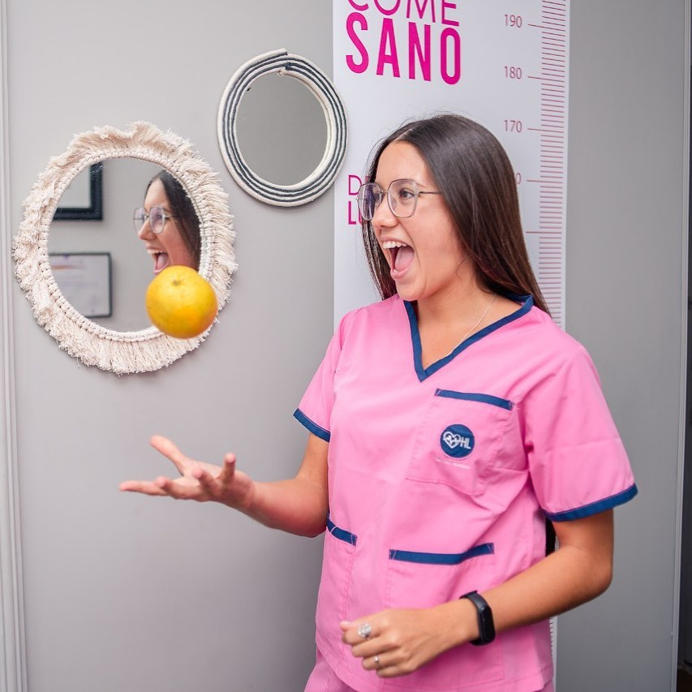

¿Estas cansadx de hacer dietas y que no tengan resultado ?
Quiero ayudarte a tener una alimentación diaria mas fácil diciendole que NO a las dietas y permitiendo que te acompañe en este proceso de cambio de habitos, que la gente sepa que si se puede con constancia y esfuerzo.
-
Mi nombre es Lara Bertuzzi, tengo 26 años, estudie la carrera de nutrición en la universidad nacional de Cordoba(UNC). Primero empecé compartiendo recetas saludables para ayudar a tener una alimentación diaria mas fácil pero ahora tengo la necesidad de contar un poco mas sobre que es la alimentación saludable, desmitificar un poco las dietas y hacer incapie en una alimentación consciente. Lo que me apasiona es poder informar, acompañar a las personas ya que entran en juego un montón de factores en el acto de comer como las conductas alimentarias, los habitos, las costumbres, los sentimientos que por ahí antes no se consideraba lo suficiente.
-
